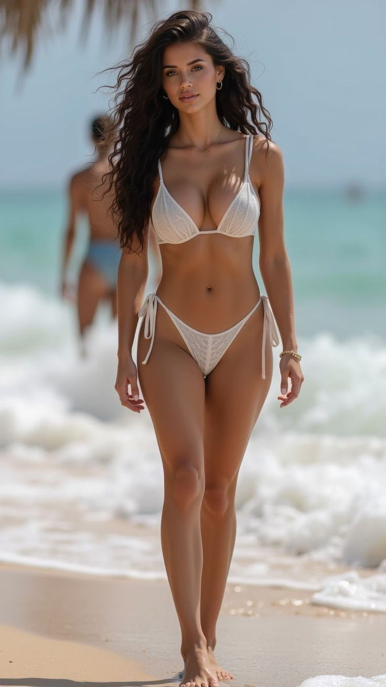
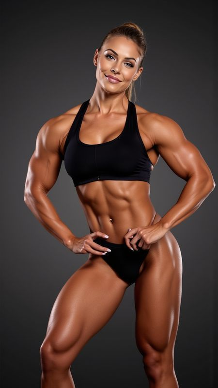

Perfil: Es la categoría más popular y accesible para principiantes.Físico: Se busca un tono muscular saludable, curvas estéticas ("forma de X"), buena proporción y un porcentaje de grasa moderado. Se penaliza la musculatura extrema, las estrías o la sequedad muscular.Evaluación: Se califica al 100% el equilibrio, la forma, el tono de piel, la presencia escénica y la elegancia.

Perfil: Creada para mujeres con una estructura de tren inferior fuerte (piernas y glúteos voluminosos).Físico: Mayor masa muscular y desarrollo en la zona de las piernas y glúteos en comparación con la parte superior, pero manteniendo una silueta femenina y equilibrada. Se busca un desarrollo muscular moderado, con énfasis en la parte inferior del cuerpo, pero sin llegar a la hipertrofia extrema.
Perfil: Para atletas que buscan un mayor desarrollo muscular y definición que en las categorías anteriores, pero sin llegar a los extremos.Físico: Se evalúa la simetría, la proporción entre la espalda ancha y la cintura estrecha, y un tono muscular visible. Se exige un porcentaje de grasa menor y más detalle muscular.

Perfil: Una categoría de culturismo puro orientada a un alto nivel de masa muscular y definición.Físico: Las atletas muestran un desarrollo muscular muy alto, densidad y separación muscular detallada. A pesar del gran volumen, se sigue premiando la simetría, la fluidez de las poses y la gracia en el escenario.

Perfil: La disciplina original de mayor tamaño muscular.Físico: Exige el máximo desarrollo de masa muscular, simetría y definición posible.

Perfil: Una de las categorías más recientes, orientada a un físico de modelo de pasarela.Físico: Se premia un cuerpo atlético, tonificado y esbelto, sin la gran hipertrofia de otras categorías, haciendo foco en el glamour y la caminata
 Volver al inicio
Volver al inicio